Epidemic models
Epidemic models
Torbjørn Seland
Sep 23, 2014
Table of contents
Introduction to the chapter
Epidemic models
Simple Epidemic models
Threshold phenomenon
Epidemic in an English Boarding School 1978
Zombification
Parameters used in the model
The initial phase
The hysterical phase
The counter attack
The three phases in Walking Dead
Bibliography
Introduction to the chapter
This chapter will be split into two different parts. The first sections will be based on the chapter "Dynamic of Infectious Diseses" in Mathematical Biology by J.D Murray [1]. This will give a history perspective on different epidemic diseases and their affect on the human population. Further a basic ODE system will be shown and study to see how this model can give information about the disease and if it is severe for the human population, and then can be called an epidemic disease.
The last part will be based on a scenario where the population face a zombification, one of the most critical and devastating epidemic diseases that can occur. Here the TV series Walking Dead will be used as reference, and the series will be tested against a model based on the SIR model explained in the first section. There have been a couple of papers on this modelling earlier, and this part will look into these models and try to adjust the system to the TV series.
Epidemic models
Throughout the history large epidemic diseases has spread around the world. Often over large geographical areas. These diseases has done great harm on the population and millions of people has died. Black Death and Cholera are epidemics that has moved over large distances, both into Europe. When Black Death came to Europe in 1347, it killed about a third of the population, which at that time was about 85 million. These diseases often gave physical symptoms, which has been important knowledge through history for preventing new outburst and to cure already infected humans. They have various outbreaks, but are often related to connection between humans and animals. Malaria is an example of a disease that transmits from mosquito to human. There have been various explanations of the spread and cause of epidemics. AIDS(autoimmune deficiency syndrome) has been ascribed by many as a punishment sent by God.
The first major epidemic in the U.S.A was the Yellow Fever, discovered in 1793 in Philadelphia. 500 of a population on 50 000 died. About 20 000 fled the city and the situation was quite chaotic. This had a major impact on the subsequent life and politics of the country. The power of a disease can do larger damage, with respect to death, than a war.
After the world war II, public health strategy has focused on elimination and control of organisms which cause disease. United Nations sat in 1978 a goal of eradicating all diseases by 2000. This was before AIDS was recognized, but a large job has been done and smallpox is an example on a disease that was last seen in Somalia in 1977.
Another important aspect in the current spread of diseases, is the displacement of human populations. About a million people cross international borders daily. The growth of human population, especially in underdeveloped countries, is also a factor that affects spread, specially microbes. These conditions played a key role in the spread of HIV(human immunodeficiency) in the 1980's. World Health Organization has estimated that around 30 million are at current time infected with the HIV virus.
Knowledge through history is important for the control of different epidemics, but also important in detecting new diseases. The plague of Athens had been studied in great detail by Thucydides in 430-438 BC. Similar had been done with the 'sweating sickness' in the late 15th and first of the 16th centuries in England. The symptoms of 'sweating sickness' was detected in 1993 in the Southwest U.S.A. Here the disease was called hanta virus. There is likely that this is the same disease, but that the 'sweating sickness' has been dormant for couple of hundred years.
There are four main microorganisms that can be disease-causing. These are; viruses, bacteria, parasites and fungi. This chapter will focus on the population dynamics. Spatiotemporal models will be studied in later chapters. These mathematical models have been important for the combating of the diseases. Both in describing the movement pattern but also in giving reasoned estimated numbers for the level of vaccination.
Simple Epidemic models
Most of the models shown here will have a constant population. This may differ from the real world. How the population interact is another assumption that has to be done. This has to be similar for the whole area that is modeled. The population can be divided into three different groups.
- Susceptible (\( S \)), which consist of humans that are healthy and at risk of becoming infected.
- Infective (\( I \)),this group has the disease or are carriers of the disease. This group can infect the Susceptible.
- Removed (\( R \)),t his group consist of either dead or recovered humans, often people that already have had the disease.
The natural order for a human is,
$$
\begin{equation}
S \rightarrow I \rightarrow R.
\end{equation}
$$
This model is called \( SIR \) model, but the number of classes can be changed. \( SI \) only consist of the two first groups and \( SEIR \) has added an extra class \( E \), where the disease is latent. This can be used to model the incubation time.
A couple of important assumptions that has to be done for the model, are the transmission of the infection and incubation period. These are reflected in the terms of the equations. The amount of people in each class can be seen as a function of time, expressed as \( S(t),I(t) \) and \( R(t) \). The growth of \( I \) caused by Susceptible, can be viewed as a rate proportional to the number of Infective and Susceptible multiplied by a constant,$rSI$, where \( r>0 \). This constant controls the efficiency of the transmission from \( S \) to \( I \). This will appear as a reduction in the function \( S(t) \). The rate of removal from Infective to Removed can be viewed as the number of Infective times a constant,$aI$, where \( a>0 \) controls the time spent in the Infection state. The incubation time is here negligible. This could have been taken into account by the \( SEIR \) model. The dynamic model will be,
$$
\begin{align}
\frac{dS}{dt} =& -rSI \nonumber\\
\frac{dI}{dt} =& rSI-aI \label{eq:SIR_model}\\
\frac{dR}{dt} =& aI \nonumber
\end{align}
$$
This model is called the Kermack-McKendrick(1927) model. It is considered that the classes are uniformly mixed and that there is equal probability for contact for all individuals. This assumptions will not be correct for all diseases, especially sexually transmitted diseases. The total number of the population will stay constant. This can be seen on the total change in the classes,
$$
\begin{equation}
\frac{dS}{dt} + \frac{dI}{dt} + \frac{dR}{dt} = 0
\end{equation}
$$
Therefore the total size of the population, \( N \), will be constant.
$$
\begin{equation} \label{eq:SIR_N}
S(t)+I(t)+R(t) = N
\end{equation}
$$
Threshold phenomenon
The threshold phenomenon is an important question when studying an epidemic model. To cause an epidemic situation, the model need to fulfill \( I(t)> I_0 \) for some \( t>0 \), where \( I_0 \) describe the initial condition for Infective. The initial conditions can be given as,
$$
\begin{equation}
S(0)=S_0 > 0,\hspace{8mm} I(0)=I_0>0,\hspace{8mm} R(0) =0.
\end{equation}
$$
The initial conditions for Susceptible and Infective combined with \( r \) and \( a \) will control the epidemic situation. These will affect the spread of the infection. From equation \eqref{eq:SIR_model} the function for Infection at initial time can be written,
$$
\begin{equation}
\left[\frac{dI}{dt}\right]_{t=0} = I_0(rS_0-a)
\end{equation}
$$
The expression inside the brackets controls the change in \( I \). The function will increase if \( S_0 > \frac{a}{r} \), this will therefore be the threshold value for the function. This can be shown with some phase trajectories of the Susceptible and the Infective.
Figure 1: Several simulations with start position along the blue line. Infective increase until S = \( \frac{a}{r} \), which is sat to 35. Then Infective decrease towards 0
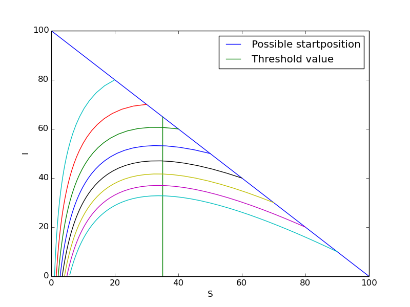
The simulation shows that when the value of \( S \) is larger than \( \frac{a}{r} \), the value of \( I \) will increase. But when \( S = \frac{a}{r} \), the value of \( I \) reaches a maximum value and then starts to decrease. The reproduction rate can be described
$$
\begin{equation}
R_0 = \frac{rS_0}{a}
\end{equation}
$$
If \( R_0 > 1 \) it will cause an epidemic reaction. This parameter is crucial in the understanding of the work with the disease. To be able to keep \( R_0 < 1 \) will prevent a dispersion. An effective way to get control is with global vaccination programs. Smallpox is an example on a disease that nearly has been eradicated around the world. This is due to a reduction of Susceptible. But there is always a small chance for side effects when using vaccination. And therefore some people choose to skip it. This is quite critical for the fight of total eradication. Not only is it a big risk for the specific person, but it also increase the number of Susceptible. An important thing to remember is that an epidemic situation can quickly grow again if the reproduction rate reaches the threshold
Some analytical studies can be done on the simple model\eqref{eq:SIR_model}.
$$
\begin{equation}
\frac{dI}{dS} = -\frac{(rS-a)I}{rSI} = -1 + \frac{\rho}{S},\hspace{8mm}\rho=\frac{a}{r}, (I\neq0).
\end{equation}
$$
The singularities will all lie on the I=0 axis. This equation can be integrated and will then give phase plane trajectories in the (I,S) plane. This can be seen in the figure(1).
$$
\begin{equation} \label{eq:constant}
I+S-\rho \ln S = constant = I_0 + S_0 - \rho \ln S_0
\end{equation}
$$
An observation is that all initial values satisfy \( I_0+S_0=N \) since \( R(0) = 0 \). This will change when \( t>0 \). If a disease appears it would be important to know the severity of the disease and the chance of developing to an epidemic disease. Therefore the maximum value \( I_{max} \) which occurs when \( S=\rho \) is crucial to know. At this point, \( \frac{dI}{dt}=0 \). This can be found by using \eqref{eq:constant}
$$
\begin{align}
I+S-\rho \ln S =& I_0 + S_0 - \rho \ln S_0 \nonumber \\
I_{max}+\rho-\rho \ln \rho =& I_0 + S_0 - \rho \ln S_0\nonumber \\
I_{max}=&- \rho+\rho \ln \rho + I_0 + S_0 - \rho \ln S_0\nonumber \\
I_{max}=&N - \rho + \rho \ln\frac{\rho}{S_0} \label{eq:max_I}
\end{align}
$$
The trajectory in the figure (1) shows quite clear the difference between \( S_0 > \rho \) and \( S_0< \rho \). An increasing of Infective will occur in the cases where \( S_0 \) is higher. While a decreasing will happend when \( S_0 \) is lower. An example can be shown. The \( \rho \) in the simulation above is sat to 35. While \( N=100 \) for all trajectories. A calculation can be done on the lowest trajectory which has the initial conditions \( S_0= 90 \) and \( I_0= 10 \)
$$
\begin{align*}
I_{max} =& N-\rho + \rho \ln \frac{\rho}{S_0}\\
I_{max} =& 100-35 + 35 \ln \frac{35}{90}\\
I_{max} =& 31.94
\end{align*}
$$
This situation causes an epidemic situation since \( I_{max} \) is quite much higher than the initial condition I_0. The figure(1) shows that the trajectory of this function starts decreasing after this point. In the two upper trajectories where \( S_0< \rho \), the Infective starts decreasing from initial condition. Infective will move towards zero as \( t\rightarrow \infty \).
The Susceptible will always have a decreasing solution since \( \frac{dS}{dt}<0 \) when \( S\neq0 \) and \( I\neq0 \). From the ODE system\eqref{eq:SIR_model} some integration can be done,
$$
\begin{align*}
\frac{dS}{dR} =& -\frac{S}{\rho}\\
S =& S_0e^{-R/\rho}
\end{align*}
$$
Then the following term is then true,
$$
\begin{equation} \label{eq:S_infty}
S = S_0e^{-R/\rho} \geq S_0e^{-N/\rho} > 0
\end{equation}
$$
As \( t\rightarrow \infty \) the total number of Susceptible will be in the range \( 0< S(\infty)\leq N \). This range can be reduced even more by knowing that \( I \) will increase as long as \( S> \rho \). The number of Susceptible will therefore be in the range \( 0< S(\infty)\leq \rho \). Since \( I \) will be zero when the time goes towards infinity the Removed class can be described \( R(\infty)= N -S(\infty) \). Now this can be added into \eqref{eq:S_infty}, which gives,
$$
\begin{equation}
S(\infty) = S_0 \exp\left(-\frac{N-S(\infty)}{\rho}\right)
\end{equation}
$$
\( S(\infty) \) be found as the positive root in the transcendental equation. This can be used to find the total number of people who catch the disease.
$$
\begin{equation} \label{eq:total_I}
I_{total} = I_0 + S_0 -S(\infty)
\end{equation}
$$
This analysis is based on the important implication that the disease dies out because the Infective class goes towards zero, and not because of the lack of Susceptible. This is the case for all diseases and the important factor is the removal rate, \( \rho \). This will affect the number of Susceptible that can be infected. This removal rate will also varies with respect to different parameters as population density, incubation time and the length of the period of sickness. The two equations \eqref{eq:max_I} and \eqref{eq:total_I} gives an understanding of the maximum and total number of Infective, but the methods demand the exact number of \( \rho,I_0,S_0 \) and \( S \), which is quite hard to get exactly in a real situation. The challenging thing is often to know how many that are infected at each time. The number of Removed is often the easiest group to control.. This group is assisted with medical help. So to model a realistic situation, the number of Removed as a function of time \( dR/dt \) is a realistic model. Here the equations from \eqref{eq:SIR_model} ,\eqref{eq:SIR_N} and \eqref{eq:S_infty} can be used.
$$
\begin{equation} \label{eq:dR_normal}
\begin{aligned}
\frac{dR}{dt} =& aI\\
=& a(N-R-S)\\
=& a(N-R-S_0e^{-R/\rho}), R(0)=0,
\end{aligned}
\end{equation}
$$
This solution also demands several parameters as \( a \), \( r \), \( S_0 \) and \( N \) to solve this numerically. It is normal to adjust the parameters after the epidemic situation to get the best result as possible. But if the epidemic is not to large, \( R/\rho \) will be quite small, at least under 1. Then another model from Kermack and McKendrick(1927) can be used. J.D Murray does a deeper study [1] for the interested reader. This chapter will look at one example from a boarding school in England and do some studies on the change in \( \rho \).
Epidemic in an English Boarding School 1978
The British medical journal had in 1978 a report from a boarding school in England. One of the boys had brought with him a disease back to the school. Since this was a boarding school, they were totally isolated from others and had a closed system to model.
Figure 2: An English boarding school is modeled for 14 days with the following parameters: \( N=763 \), \( S_0=762 \), \( I_0=1 \), \( R_0=0 \), \( \rho=202 \) and \( r=2.18 x 10^{-3} \) .An increasing of Infective can be seen since \( S_0 > \rho \).
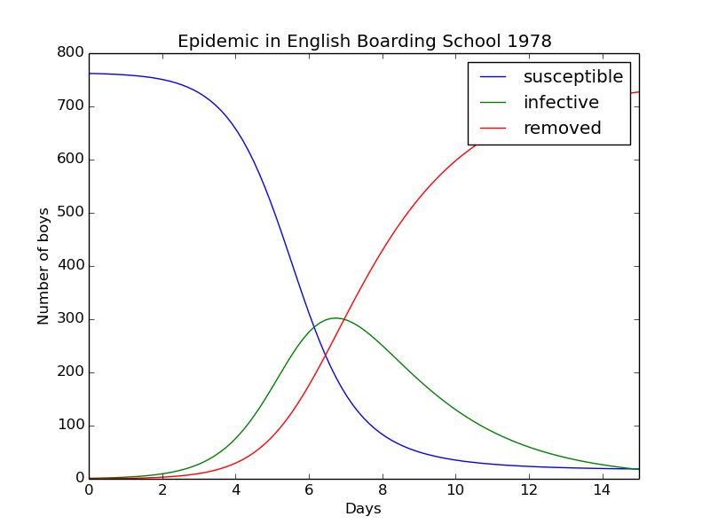
The parameter value \( \rho = \frac{a}{r} \) has a major impact on the result. The epidemic disease could turn out quite different than in the situation above by variations in \( a \) and \( r \). Here are some examples where \( \rho \) varies from 50 up to 400.
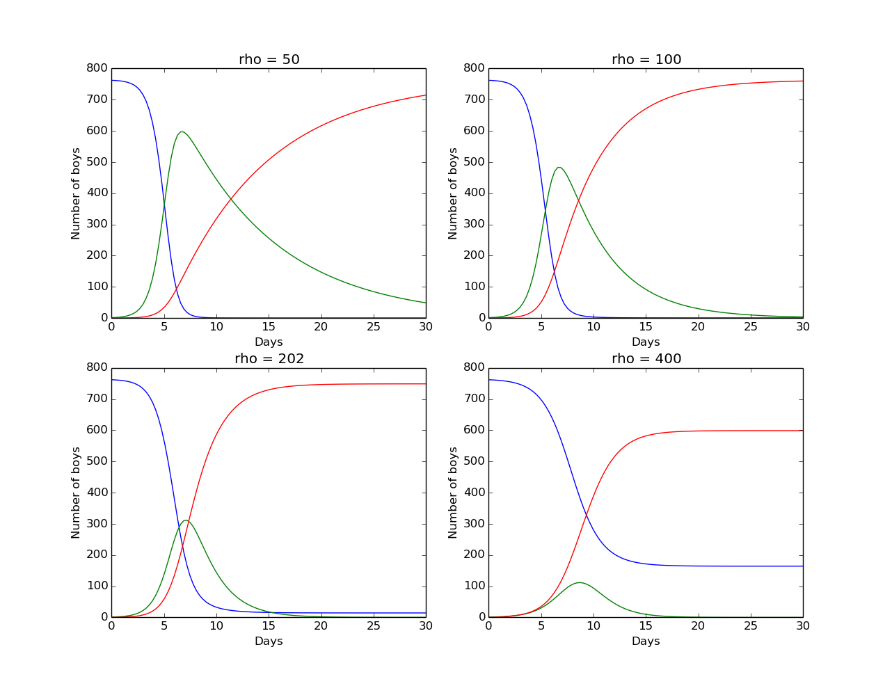
A small \( \rho \) gives an aggressive disease, since \( I \) will increase until \( S= \rho \). The Infective will increase until the number of Susceptible falls down to 50. This will result in a majority of infected students. A large \( \rho \) has the opposite effect. The total number of Susceptible stays around 170 students and will go towards a steady number as \( I(\infty)=0 \).
Zombification
One of the worst epidemics that can affect the human population is a zombie attack. This will have a huge impact on the way humans live today. Several movies and series has illustrated this type of situation, but it is time that the scientists also take this threat seriously. There have been written a couple of papers about this. Munz et. al[[2]] used the SEIR model to simulate an possible upcoming zombiefication, where the latent class(\( E \)), is replaced with an Infected class(\( I \)) and the Infected class(\( I \)) is replaced with a Zombie class(\( Z \)). Here it is important to know that the Infected class in the \( SIZR \) is not the same as in the \( SEIR \) model presented earlier. The following model was used,
$$
\begin{align*}
\frac{dS}{dt} =& \Sigma -\beta SZ - \delta S \\
\frac{dI}{dt} =& \beta SZ - \rho I - \delta I\\
\frac{dZ}{dt} =& \rho I + \zeta R - \alpha SZ\\
\frac{dR}{dt} =& \delta S + \delta I + \alpha SZ - \zeta R
\end{align*}
$$
This is a bit more complicated than the standard \( SEIR \) model. A presentation of the parameters;
- \( \Sigma \) describes the birthrate for new Susceptible. \( \frac{dS}{dt} \) is now able to be positive.
- \( \beta SZ \) describes the numbers of Susceptible that become Infected , by interactions between zombies and humans. Similar as the case for \( rSI \) in the SIR model.
- \( \delta \) describes the number of naturals deaths among the group. This is used in the Susceptible and the Infected group
- \( \rho I \) describes the probability for an infected human to wake up as a zombie.
- \( \zeta R \) controls the number of Removed that arises as Zombie.
- \( \alpha SZ \) describes the number of zombies killed by humans in the zombie attacks.
This model was challenged by Langtangen, Mardal and Røtnes[[3]] now referred as LMR, where they developed another model based on the movie The Night of The Living Dead. They developed the model in another way with three important arguments. They argue that dead zombies cannot become functioning zombies again. Therefore \( \zeta \) will always be zero. They let the parameters in the model change with time, according to the phases and the parameters are estimated based on the movie. There is also added a function \( \omega(t) \), which creates a massive attack from the humans. This is controlled by a time variable and give the Susceptible a chance to fight back. The system:
$$
\begin{align*} \label{eq: LMR_model}
\frac{dS}{dt} =& \Sigma -\beta SZ - \delta_SS \\
\frac{dI}{dt} =& \beta SZ - \varrho I - \delta_II\\
\frac{dZ}{dt} =& \varrho I- (\alpha+\omega(t))SZ + \zeta R\\
\frac{dR}{dt} =& \delta_SS +\delta_II -\zeta R + (\alpha+\omega(t))SZ
\end{align*}
$$
The main change here is the \( \omega(t) \) introduced above. This is a Gaussian curve and can be seen under. The function,
$$
\begin{equation}
\omega(t) = a \sum^m_{i=0}\exp\left(\frac{1}{2}\left(\frac{t-T_i}{\sigma}\right)^2\right)
\end{equation}
$$
controls the attacks from the Susceptible, which will be fired at predefined time steps. These are controlled by the parameters. \( a \) here works as a similar parameter as \( \alpha \), but will only be activated when the Susceptible group is organized and ready to attack. \( T \) contains a list of numbers, which controls the time when the attacks will occur. \( \sigma \) controls the width. This function will be shown separately later when it is used.
Parameters used in the model
An important factor while modelling a zombie attack is the parameters. Parameters from the movie The Night of The Living Dead is used as parameters in the ODE system from LMR[[3]]. This thesis has study the TV series Walking dead in detail. The data will be based on the first five episodes and are constructed by watching the episodes carefully. The three phases in a zombie attack will be based on the form used in the paper from LMR[[3]].
The initial phase
In this phase the disease is yet not known and humans try to save the sick ones by taking them to hospitals or get some kind of treatment. Because of this ignorance related to the disease, the number of infected humans is high. This phase is often quite short and humans soon starts realise that the risk of getting infected by saving other is really high. Walking Dead never shows anything from this phase, but the viewer only sees the damages done when the main character sheriff Rick Grimes wakes up at the local hospital. What he wakes up to is the major damage caused in the initial phase while the society has moved to the hysterical phase.
To denote the question about the time, the length of Ricks coma is essential. There are several factors that gives an indication of the time aspect. When Rick wakes up at the hospital he has grown a smooth beard of about 1 cm. This would correspond to 1 month in average for an European origin. He also has some flowers which has dried out, these also give the impression that there has been some weeks. The hospital is running on its emergency generator. This would probably not last for many days with a fully operational hospital, but the hospital is as well as shut down when Rick wakes up and can give the emergency generator a longer lifetime. Dr. Edwin Jenner gives the viewer some information in episode 5. Here he records a video log describing his result.He tells the viewer that it was 63 days since the epidemic started spreading. By studying the first five episodes in detail, the series gives a sense that the time aspect has not been in focus. Therefore the different phases are constructed from the information that has been given. Rick Grimes has probably been in coma for a month and the number of zombies he meets the first days will be the basis of the data that the numbers in the model will be based on. The total amount of objects in the model will be based on the number of humans, dead and zombies seen in the first five episodes.
- The number of humans has been estimated to 62. 20 living in the camp with Rick, 40 humans in the old nursing home and the father and son in episode 1.
- The number of dead is estimated to 200. This is based on the amount of dead outside the hospital where Rick wakes up.
- The number of zombies are assume to be 360. These are based on the 30 outside the house of Morgan Jones and his son Duane, 300 zombies in the city Atlanta and 30 zombies attacking the camp.
The total number will then be 622. Since these numbers are calculated for about a month after the outbreak of the disease and the initial phase probably are over in three days. After this the hysterical phase starts.Over the three first days when Rick is awake about 20 zombies are killed by humans and 1 human is killed by zombies. This can be used to calculate the final number in the initial phase. To do this calculation easier, a month is assumed to be 30 days and 27 days earlier. The numbers are set to:
$$
\begin{align*}
\frac{27}{3}*20 =& 180\\
\frac{27}{3}*1 =& 9
\end{align*}
$$
180 zombies and 9 humans are killed in this period. The final number for the initial phase can then be set to 71 humans, 540 zombies/infected and 20 dead. This is the same number as for the initial values for the hysterical phase. Another question to discuss is the incubation time. Here there are two examples that can be used. The first transformation from human to zombie happens for Amy, who was bit in the arm by a zombie. The transformation happens in about 12 hours. The other character Jim has a slower transformation. This last for about two days before the rest of the group leave him alongside the road on their way to CDC(Center for Disease Control). An average of the incubation time can then be set to 24 hours based on these two transformations.
Now the ODEmodel can be used to model the initial phase. \( S_0 = 621 \) and \( Z_0 = 1 \) while the two other groups are set to zero. \( \beta \) can be found with the expression \( \beta \Delta t S Z \) from the first ODE equation. After three days about 90 percent of the humans are killed. The probability for a human being infected will be sat to \( \beta = 0.3 \). The natural death rate is sat to \( \delta_S = 2.2*10^{-5} \) based on [4]. It is quite hard to find similar realistic data for infected humans, so \( \delta_I = \delta_S \). The number of births is sat to \( \Sigma = 3.45*10^{-5} \). This is based on data from CDC from 2012 [5]. Since this is data for the initial phase, zombies are seen as infeteced humans that can be saved. Therefore \( \alpha = 0 \). And the two last parameters are also zero, \( a = \zeta = 0 \). This model will be:
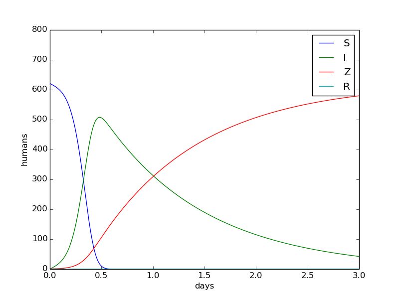
This result shows that the human population is eradicated in about a half day. This is not the case, and some adjustments need to be done. There are three parameters that are interesting to study. The first is \( \beta \), which describes how many humans that get infected in a human-zombie collision. Second one is \( \varrho \). This parameter controls the incubation time. The last parameter that can affect the number in each group is \( \alpha \). This describe the number of zombies that gets killed in a human-zombie collision. These variables are plotted separately and combined in the last subplot. The idea here is to produce results that fulfill the final number for the Susceptible class and the Removed class, which is 71 and 20. The blue dot in each plot is describe this value. A rough estimate has been done for each parameter before using it. This is why they all lie in different regions than the values for the plot above
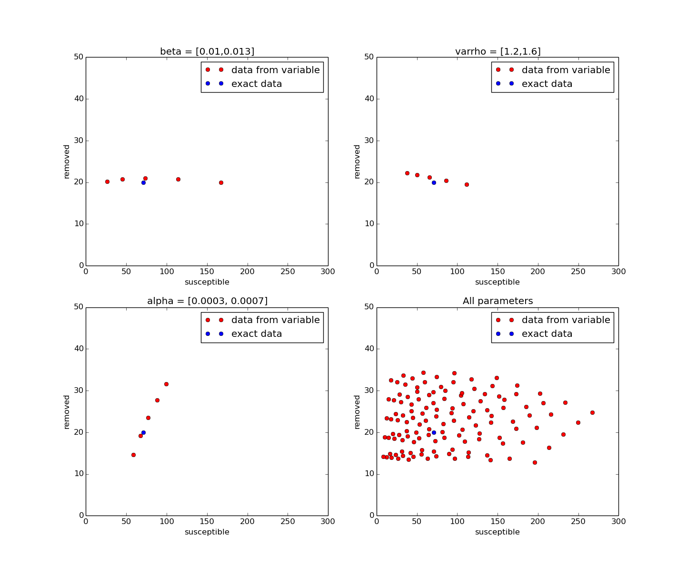
These plots give an important knowledge in the effect of varying the parameters. \( \beta \) and \( \varrho \) mainly affect the number of Susceptible while \( \alpha \) affect them both. By choosing \( \beta = 0.01155 \), \( \varrho=1.37 \) and \( \alpha=0.00044 \), the following plot can be produced:
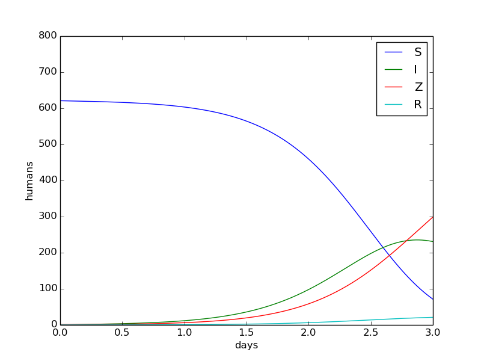
Here the final values are \( S_n=71.3,I_n=230.8,Z_n=298.9 \) and \( R_n=21 \), which is quite close to the result from the movie. By looking at these changes, it is possible to argue for them. By increasing \( \varrho \) to 1.37 reduces the incubation time. Now the average time will be about 17.5 hours which is quite realistic. The probability \( \beta \) is quite sensitive and has a major effect only from small variations. This is due to the term that it is a part of. \( \Delta t SZ \beta \). A couple of examples demonstrate this. \( \Delta t = 1/24 \), this is equivalent to one hour. When using the initial values for the classes \( S \) and \( Z \) and \( \beta=0.01155 \) from the second plot, the number of infected in the first hour will be \( (1/24)*721*1*0.01155=0.34 \). 1/3 of a human in the first hour seems as a slow and not very aggressive disease. But when the number of zombies slowly increase, this will affect the numbers of infected. By looking at the hour when the number is equal between humans and zombies, about 200. The number of infected this hour will be 19.25 per hour. This result in about 10 percent. By changing \( \beta \) to the value from the first plot, the number of infected will be 500 per hour and it is quite easy to see that this will lead to eradication in a short amount of time. The last parameter \( \alpha \) controls the number of zombies that dies in an interaction between zombies and humans. While humans still think that this is a disease that the infected can be saved from, it is still a chance that the result of a collision can end with a murder. By some adjustments these results can be seen as realistic values.
The hysterical phase
Now the humans start to avoid the infected and some tries to fight them. The humans often gather in groups and try to find safe spots away from the zombies. Important emergency as weapons and food are their main priority. Barricades are build and the guarding is strict. When Rick Grimes wakes up, the hospital is abandoned and the halls are filled up with dead people. Quite fast he understand that he needs to reach safety and after a certain time he ends up in a camp outside Atlanta city, where the zombies are. A couple of elementary changes in the interaction between humans and infected/zombies. In the initial phase, the humans tried to help the infected humans. This result in a high percent of infected. While they now understand this risk and keep distance to those who are infected. This will affect \( \beta \) which will have lower value. Another important assumption that the humans have done is the morality for a zombie kill. While this was seen as no opinion, this is now totally okay. The humans have started treat zombies and infected as a enemy instead as a sick allied. This result in a higher dead rate among the zombies, so \( \alpha \) will be higher. These are the main changes.
The the hysterical model can be constructed based on the data found in the initial phase. First the initial values will be based on the final data from the initial phase. These are \( S_0=71.3,I_0=230.8,Z_0=298.9 \) and \( R_0=21 \). As the final result will be \( S_n=62,I_n&Z_n=360 \) and \( R_n=200 \). Here infected and zombies are added together. The time aspect will be modeled for 30 days, which result in ten times longer simulation. Since the final results are known here, a similar adjustment of the parameters can be done. Here some test simulations are done to get the range for the parameters.
Figure 3: The final result for each combination can be shown as a grid. \( \beta=[1*10^{-5},1.2*10^{-5}] \),$\varrho=[1,2]$ and $\alpha[2*10^{-4},2.2*10^{-4}]
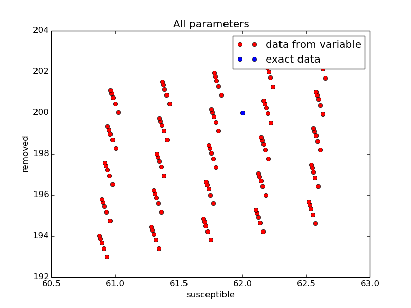
Figure 4: The final result for each combination can be shown as a grid. \( \beta=[1*10^{-5},1.2*10^{-5}] \),$\varrho=[1,2]$ and $\alpha[2*10^{-4},2.2*10^{-4}]
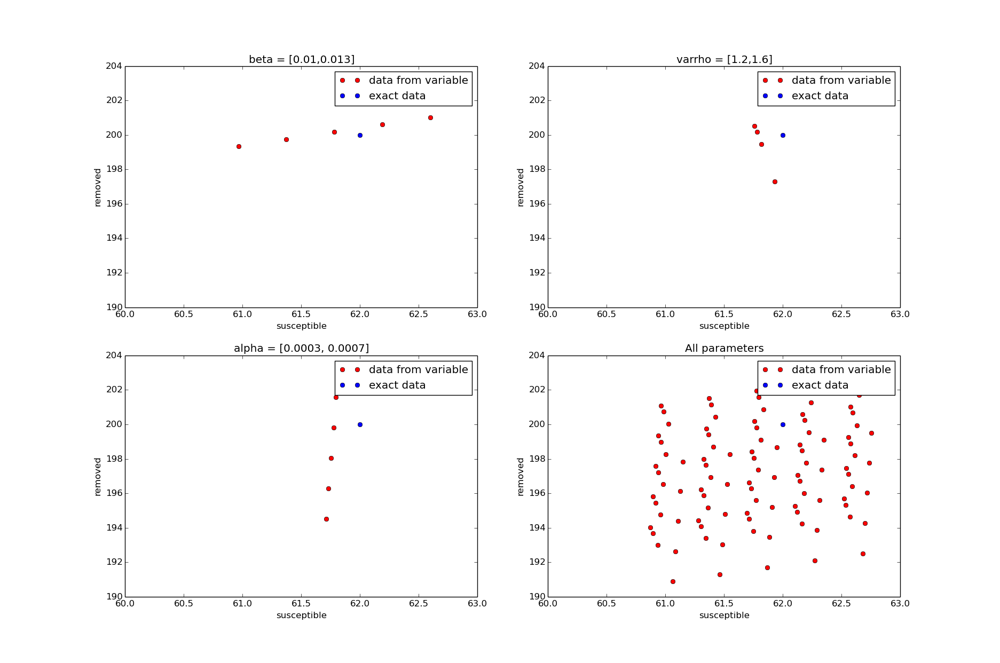
This plot gives insight in how the parameters affects the final result. By decreasing \( \beta \), it will essentially increase the number of humans that survive. But it will also increase the number of dead. This may at first glance seems quite strange. Should not the number of deaths decrease when the number of humans increase? This can be explained with the idea that was shown for \( \beta \) in the initial phase. Since \( \beta SZ \) gets smaller when \( \beta \) get smaller, the combination of \( SZ \) will stay higher for a longer time. This again affects \( \alpha SZ \), which regulates the number of zombies that dies. The larger this combination is, the more zombies will die. Then by looking at \( \alpha \), this mainly affect the number of Removed, here the dead ones.
By increasing \( \alpha \), the number of Removed also increase. But similar to the increasing of the Removed it also has a slight increase on the number of Susceptible. Here the argument for \( \beta \) above can be reversed. Since a higher \( \alpha \) leads to a higher death rate among the zombies, the combination \( SZ \) will be smaller and the number infected humans caused by \( \beta SZ \) is lower.
The last parameter, \( \varrho \), has nearly no effect. The red dots are combined with a pull down to the right when increasing \( \varrho \). This parameter varies most, but has the least impact. This can be explained with the long time aspect and the number of infected compared to the number of zombies. Since the number of zombies are that much higher, the transformation length from infected to zombie is almost negligible.
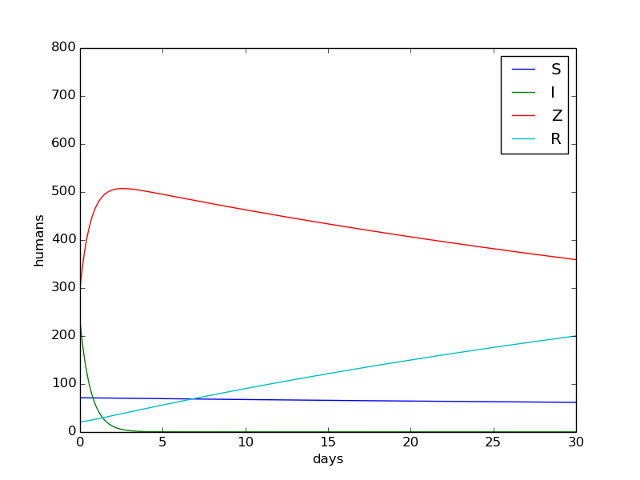
This plot fulfill the result that was predicted based on the series. These numbers correspond to the number in each group when Rick woke up in the hospital. The parameters are set to \( \beta = 0.000011 \),$\varrho = 1.5$ and \( \alpha = 0.000208 \). The plot shows that the number of zombies increase quickly and reach its maximum value after a couple of days in this phase. After this, the number of infected dramatically decrease which again affect the number of zombies. Here the humans has been able to stabilize. Since the clashes between humans and zombies are dramatically decreased, there are nearly no one that gets infected. And in the cases where humans has to face zombies, the kill rate has increased. The increase of deaths is close to proportional to the decrease of zombies.
The counter attack
This counter attack is more complicated to model since this phase appear simultaneously as the hysterical phase in Walking Dead. The group of human are trying to avoid the zombies, but when they get to close the humans need to fight back. These situations are often caused by a high density of zombies. This force the zombies to spread to new areas. In Walking dead the counter attack appears when a group of 30 zombies reach the camp. This trigger a fight where all the zombies are killed and 4 of the humans are bitten. This shows that a counter attack from the humans causes a lot of damage. The time aspect is sat to 6 hours.
Now the function \( \omega(t) \) will be used. This can be shown:
Figure 5: \( \omega (t) \) is a Gaussian function where \( a \) controls the maximum value, \( T \) controls when the maximum value strikes and \( \sigma \) controls the width of the function.
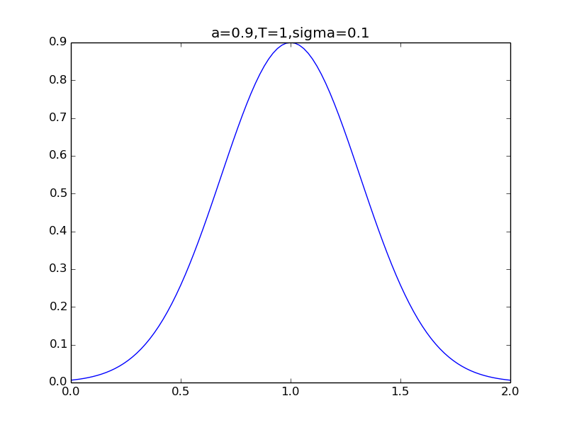
To get some startvalues, \( SZ\omega(t)=30 \) can be used. Where \( \omega(t) \) is the area under the function. By inserting the values for \( S \) and \( Z \) before the counter attach, the area shall be \( \omega (t)=1.34*10^{-3} \). By using \( a= 0.00103 \) and \( \sigma = 0.005 \) this result can be reproduced. Then counter attack is sat to appear during the last part of the day [0.75,1]. the value of T is then sat to $T=[0.875].
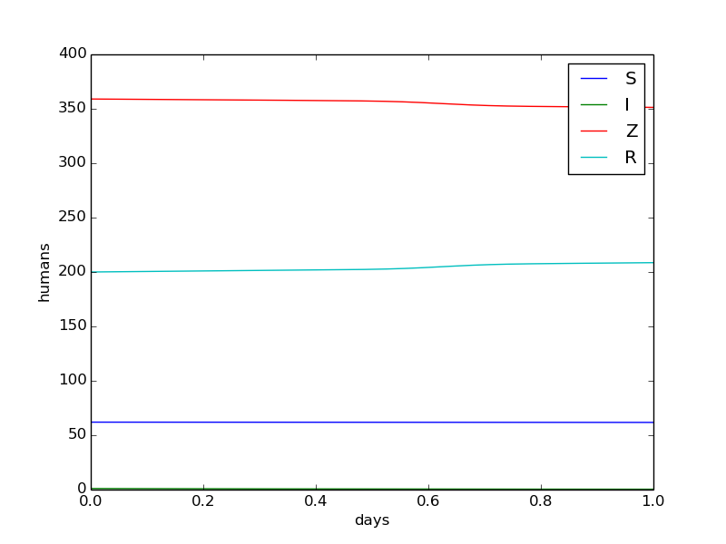
This simulation result in about 8-9 dead zombies. The total number should be higher. Another problem is that no human died under this battle. The model from [3] is based on The Night of the Living Dead, where the amount of humans who are killed are close to zero. This is not the case in Walking dead. Therefore the risk is higher for humans in a counter attack. This solved by adding \( \mu \omega (t) SZ \), where \( \mu \) is the risk for human to get infected during this attack. The model \eqref{eq:LMR_model} can then be expand,
$$
\begin{align*} \label{eq: seland_model}
\frac{dS}{dt} =& \Sigma -(\beta+\mu \omega(t))SZ - \delta_SS \\
\frac{dI}{dt} =& (\beta+\mu \omega(t))SZ - \varrho I - \delta_II\\
\frac{dZ}{dt} =& \varrho I- (\alpha+\omega(t))SZ + \zeta R\\
\frac{dR}{dt} =& \delta_SS +\delta_II -\zeta R + (\alpha+\omega(t))SZ
\end{align*}
$$
By using this model and change \( a=0.0073 \) and set \( \mu=0.14 \) the result can be reproduced.
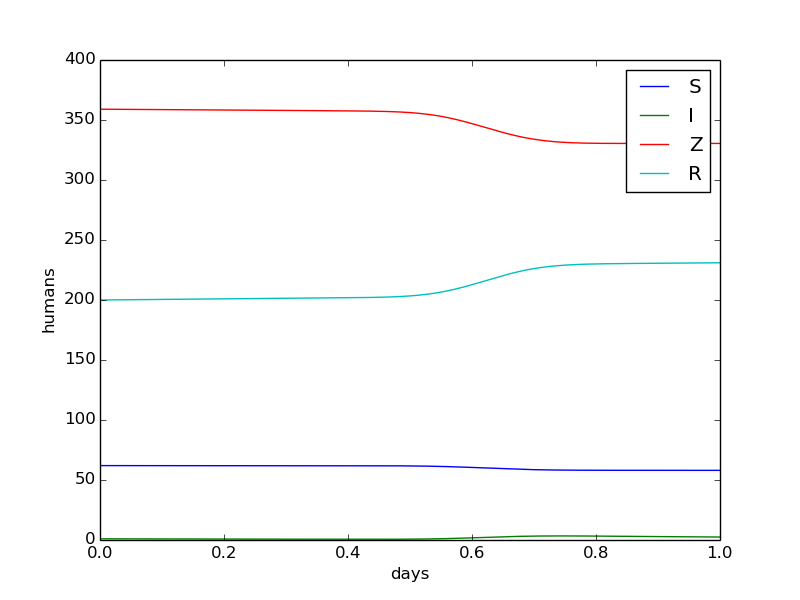
This simulation is modeled with the values given When Rich wake up, explained in the initial phase. The result after this day is that the humans are reduced to 58 humans. The number of infected are increased to 2.47, which can be explained with the two characters in the series, Amy and Jim. The number of dead is increased to 231, and is a combination of dead zombies and humans who are attacked. By modelling this for another day, the result will be a higher dead rate and a decreasing in the infected rate.
An interesting situation is to check what will happen if this counter attack repeats it self for a series of time. Who will survive? An attack every other day will give the following result,
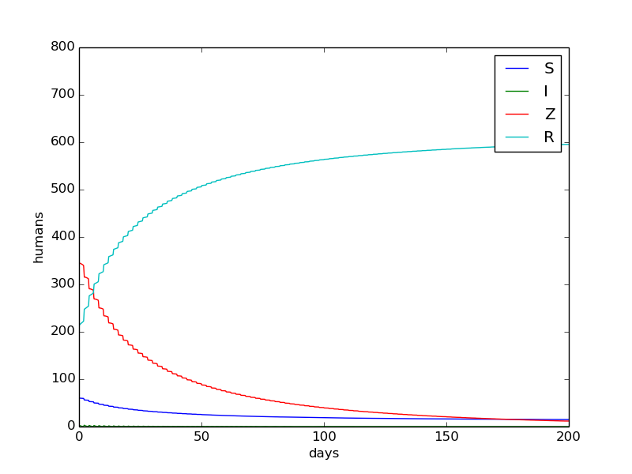
After 200 days there will be about 15 humans and 12 zombies left. Now the humans are able to survive since they are more efficiency in battles. There are of course several things to discuss. How will the number of battles effect the humans and zombies. Will they be tired or more efficiency? What about weapons? What would happen if the group of zombies was much larger? This paper is based on the series and has therefore done some assumptions based on the information given in the movie.
The three phases in Walking Dead
By adding these three phases together, the final result after the attack should be possible to match. The first simulation here will be done with the parameters used in the sections above. This will probably lead to a small mistake, since the result for the final number in each phase are given with decimals and the initial values in each phase are based on assumptions and round off numbers. The different parameter values are listed below. These are obtained from the different simulations run above.
| parameter | Initial phase | hysterical phase | counter attack |
|---|
| \( \beta \) | 0.01155 | 0.000011 | 0.00011 |
| \( \varrho \) | 1.37 | 1.5 | 1.5 |
| \( \alpha \) | 0.00044 | 0.000208 | 0.000208 |
| a | 0 | 0 | 0.0073 |
| \( \sigma \) | 0 | 0 | 0.005 |
| \( \mu \) | 0 | 0 | 0.14 |
Figure 6: Walking Dead simulated after 5 episodes. Based on the three different phases.
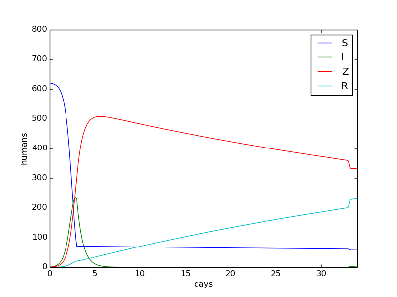
This clearly shows the different phases and the change in the different values. The different values are shown in the table under, where the values are given at the initial time. The last column consist the final values after 34 days.
| --------- | Initial phase | hysterical phase | counter attack | final values |
|---|
| S_0 | 621 | 71 | 62 | 58 |
| I_0 | 0 | 231 | 0 | 1 |
| Z_0 | 1 | 299 | 359 | 332 |
| R_0 | 0 | 21 | 202 | 231 |
This model will be used as the basic model to be compared against. The biggest advantage with this model is that it is straight forward to calculate. It it easy and quite simple to understand. This is good if the target is to find the total number in each class measured over an area, but it gives no information about the spatial spread of the disease and will therefore be useless in the work on describing how fast a disease can spread abroad countries and borderlines. The two next chapters will introduce more complicated models which will be compared to this ODE-system modeled here.
Bibliography
- J. Murray.
Mathematical Biology: I. an Introduction,
Springer,
2002,
http://books.google.no/books?id=4WbpP90Gk1YC.
- P. Munz, I. Hudea, J. Imad and R. J. Smith.
When Zombies Attack!: Mathematical Modelling of an Outbreak of Zombie Infection,
Infectious Disease Modelling Research Progress,
4,
pp. 133-150,
2009.
- H. P. Langtangen, K.-A. Mardal and P. R\otnes.
Escaping the Zombie Threat by Mathematics,
Zombies in the Academy: living death in higher education,
edited by C. M. A. Whelan and R. Walker,
University of Chicago Press,
Chapter 3.6,
pp. pp. x-y,
2013.
- D. L.Hoyert and J. Xu.
Deaths:Preliminary Data for 2011,
Division of Vital Statistics,
2012.
- J. A. Martin, B. E. Hamilton, M. J. Osterman, S. C. Curtin and T. Mathews.
Births: Final Data From 2012,
Division of Vital Statistics,
2013.